Fetch, rebase, or checkout — pick the follow-up
Git Navigator's fetch control is an action picker plus a free-form ref input. Type the ref, pick what to do, hit Go. No second-guessing whether git fetch moved your working tree (it didn't), or remembering the git checkout -b ... --track incantation.
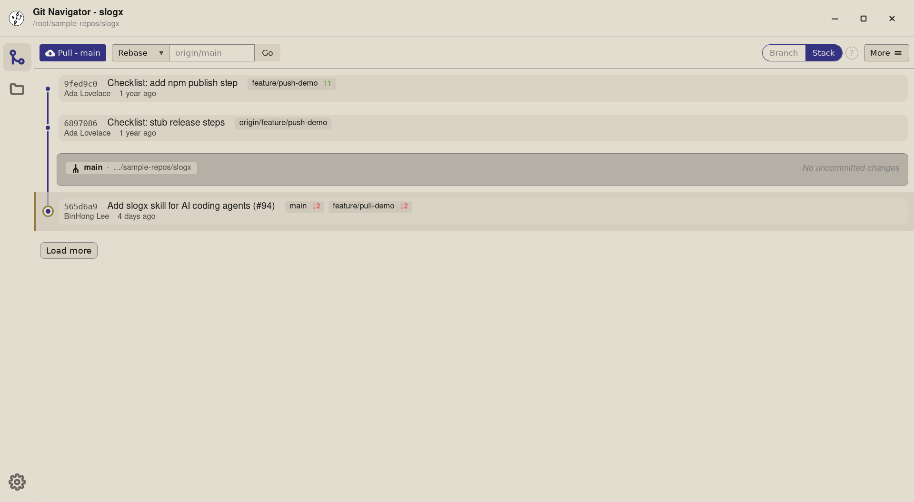
Three things you might mean by "fetch"
Type any ref, in any form
The input takes origin/main, origin/feature/x, even just origin when fetching everything. Whatever you'd type after git fetch, type here.
Fetch + Rebase replays your branch
Pick Fetch + Rebase and Git Navigator runs git fetch <remote> then git rebase <ref> for the current branch — the same effect as the pull button's rebase modes, but against any ref you typed.
Fetch + Checkout lands on a new branch
Fetch + Checkout brings in a remote branch and checks it out locally, with the upstream wired automatically. No more git checkout -b feature/x --track origin/feature/x ceremony.
Fetch only updates refs and leaves the tree alone
Fetch only runs a plain git fetch against the remote you typed. Refs and the graph update; your working tree, your branch, your selection — all unchanged.
Walkthrough
-
Step 1. The fetch control sits next to the pull button. Three pieces: an action picker on the left (defaulting to Rebase), a ref input in the middle (placeholder shows the action's typical target), and a Go button on the right. -
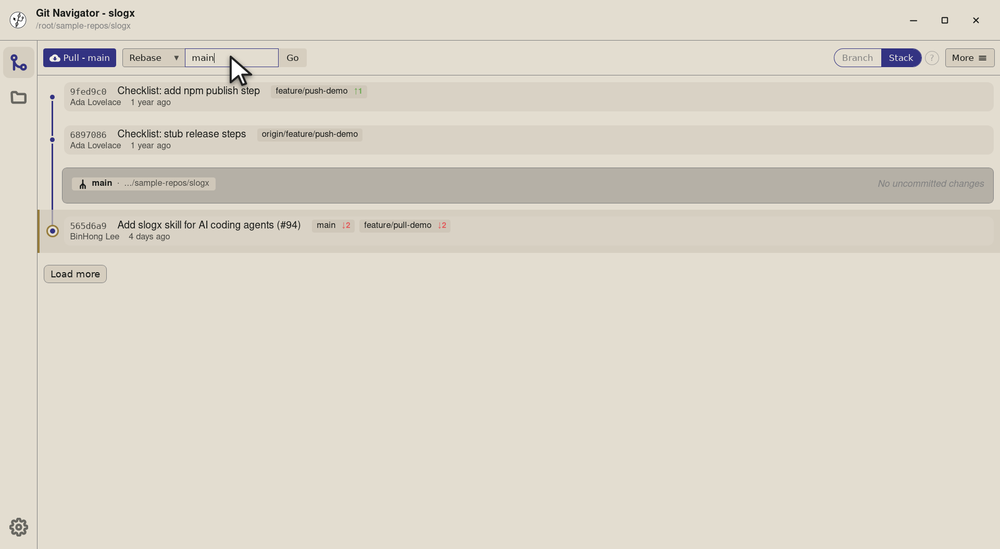
Step 2. Type the branch name you want to rebase onto — here mainto bring the current branch up to date with the remote's default. Git Navigator prepends the remote (origin) automatically, so the input stays terse. -
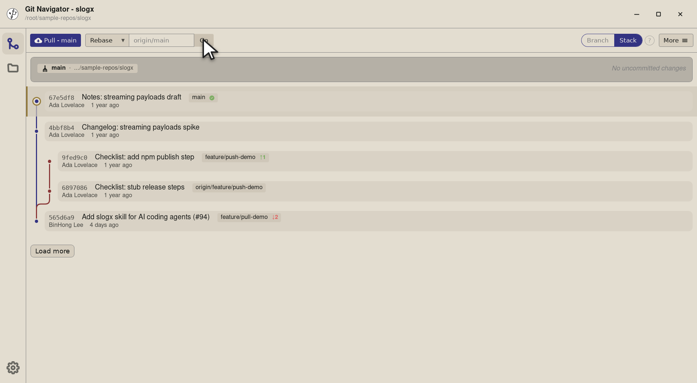
Step 3. Hit Go and Git Navigator runs git fetch originthengit rebase origin/mainon the current branch. The graph re-renders with the new history in place.
-
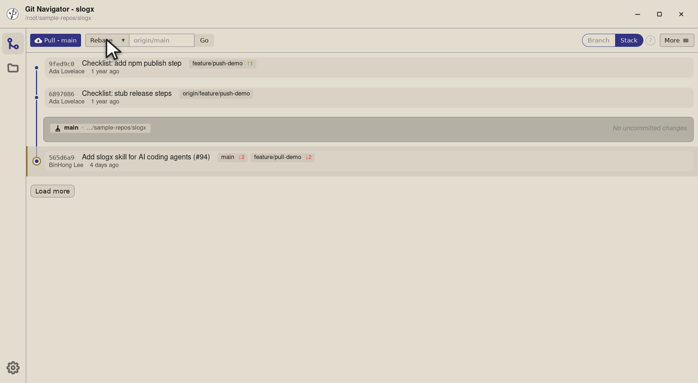
Step 1. To switch what Go means, open the action dropdown. Three rows — Rebase (the default), Checkout, and Fetch only — each pinned to its typical placeholder so the input hints at what to type. -
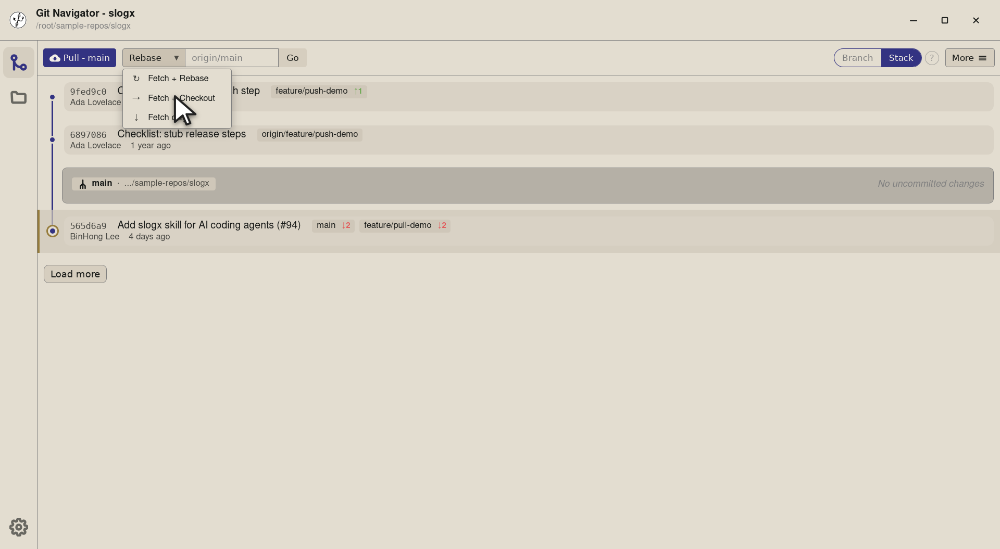
Step 2. Fetch + Checkout brings in a remote branch and checks it out as a new local branch tracking the upstream — perfect for picking up a teammate's in-progress work without remembering the checkout -b --trackdance. -
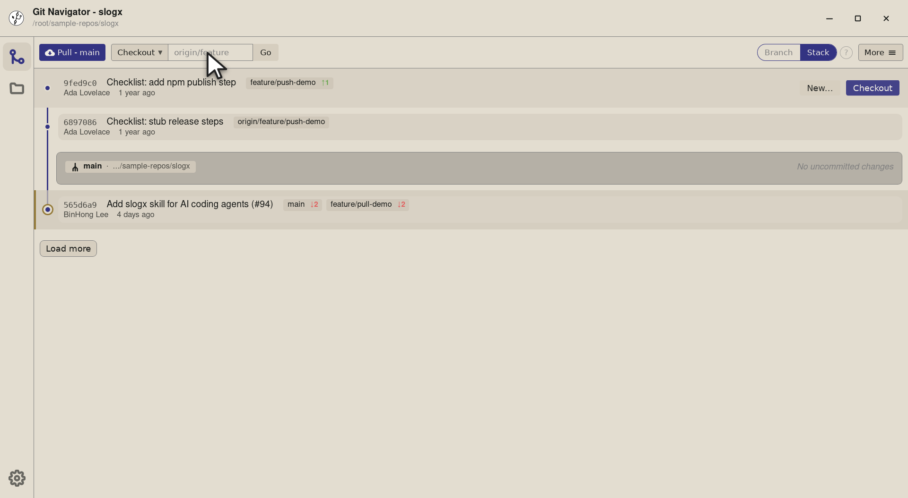
Step 3. The label flips to Checkout and the input's placeholder updates to origin/featureas a hint — same field, different semantic. -
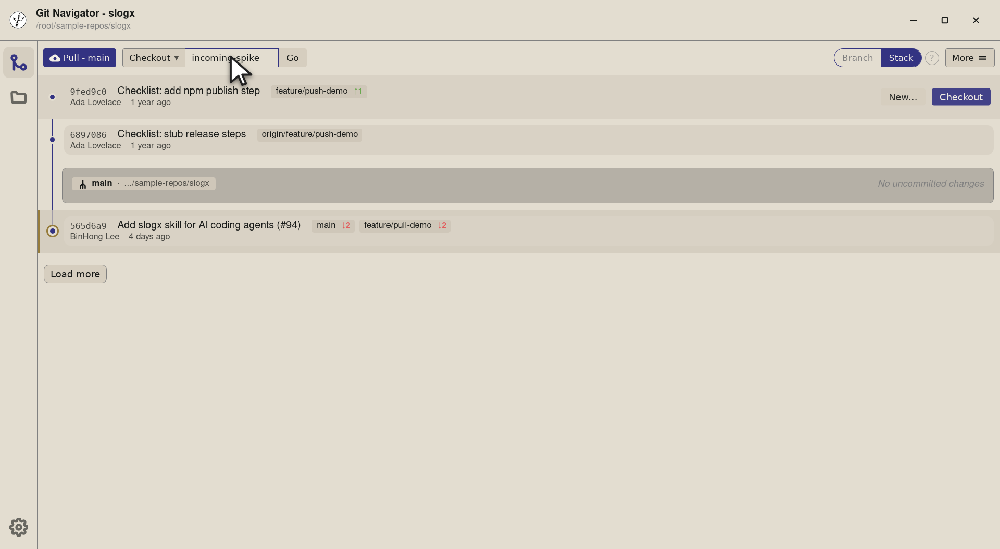
Step 4. Type the branch name to land on — here incoming-spike, a teammate's spike branch that only exists on origin. The clean field re-uses on every action change, so swapping between Rebase and Checkout is one click + one type. -
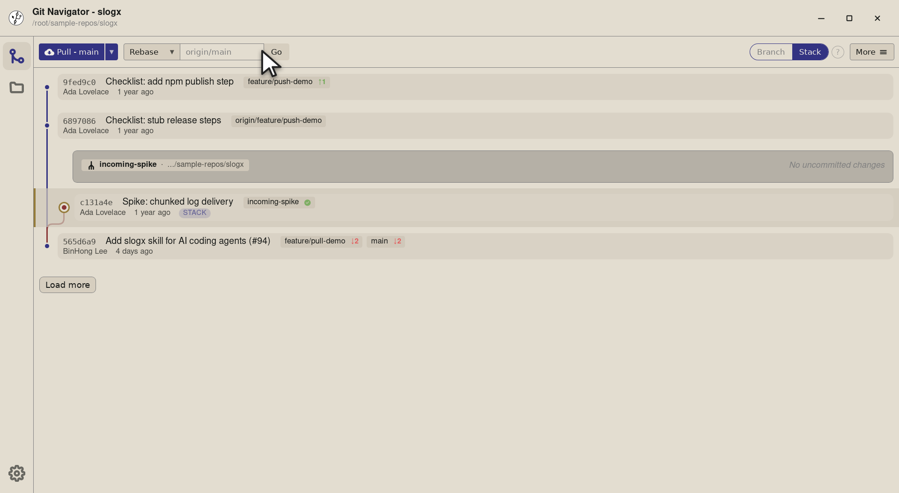
Step 5. Go runs git fetch originthen checks outfeature/incoming-spikeas a new local branch trackingorigin/feature/incoming-spike. The graph swaps to the new branch and the active-worktree badge updates.
-
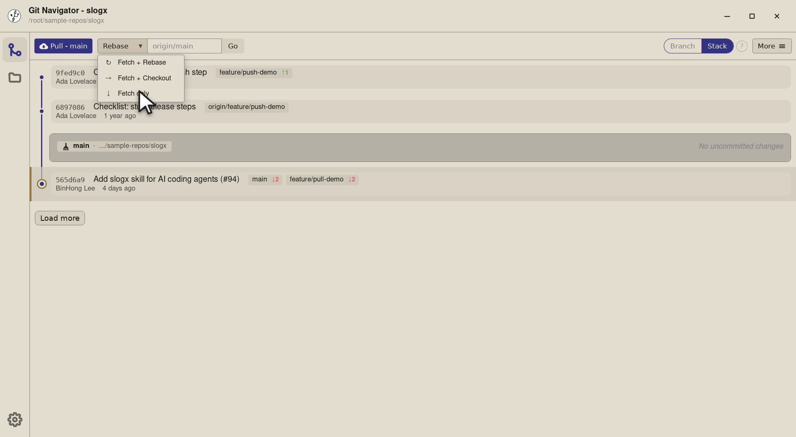
Step 1. Fetch only is the safest mode: it updates refs from the remote you type but does nothing to your working tree or current branch. Great when you just want to see what's landed without committing to a rebase or checkout yet. -
Step 2. The label flips to Fetch and the placeholder simplifies to origin— a bare remote name is all you need when you're not naming a specific ref. -
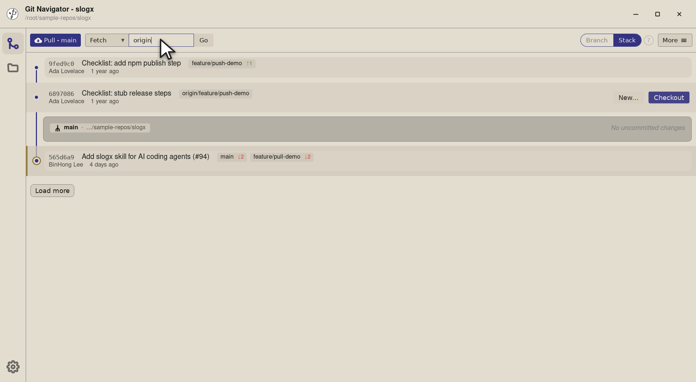
Step 3. Type the remote and Go runs a plain git fetch origin. The remote refs update in the graph — origin/* badges shift to their new heads — but local branches and your working tree stay exactly where they were. -
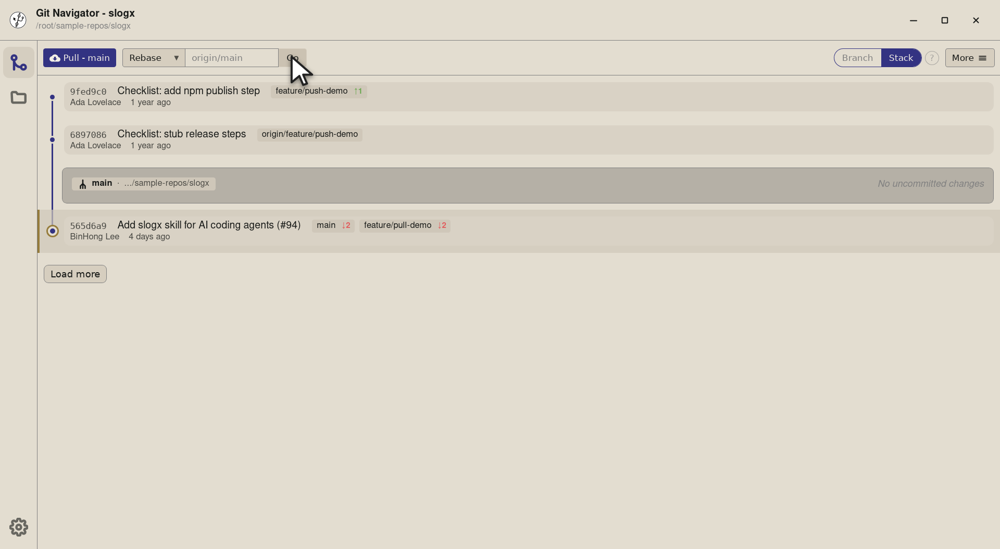
Step 4. Same outcome as git fetch originon the command line. Now you can see whether the rebase or checkout you were considering is worth the click.
Fetching, in three flavours
- Pick the action. The dropdown on the left of the fetch control picks the follow-up: Rebase, Checkout, or Fetch only. The selection persists until you change it, so a workflow of mostly-rebases stays one click + Enter.
- Type the ref. The placeholder hints at the action's typical shape —
origin/mainfor rebase,origin/featurefor checkout,originfor fetch only. Type whatevergit fetchwould accept. - Hit Go (or Enter). Git Navigator runs the underlying git commands. The graph re-renders once the operation finishes; conflicts pause on the conflict view.
- Want pull instead?. For the common "bring my branch up to date" case, the pull split button next to fetch is two clicks fewer — same underlying git, no ref to type. Use fetch when you want to target an arbitrary ref.
Frequently asked questions
What's the difference between Fetch + Rebase and the Pull dropdown?
They overlap. Pull - main and Fetch + Rebase against origin/main do the same git operations. The pull button is the shortcut for the two most common targets (the default branch and the current branch's own upstream); the fetch control is the general case for any ref you can name.
Does Fetch + Checkout create the local branch automatically?
Yes. Fetch + Checkout against origin/feature/x creates a local feature/x branch tracking the remote, the same as git checkout -b feature/x --track origin/feature/x. Subsequent pulls / pushes already know the upstream.
Why are there three placeholders in the input?
Each action expects a different shape of ref: a remote branch (origin/main) for Rebase, a remote branch (origin/feature) for Checkout, just a remote (origin) for Fetch only. The placeholder updates as you switch the action so the input always hints at what to type.
Can I fetch from a remote that isn't origin?
Yes — type the remote name in the ref input. upstream/main is a common one when you're working with a fork. The remote has to be configured in .git/config first; Git Navigator runs git fetch against whatever name you give it.
What happens to my working tree on Fetch only?
Nothing changes in the working tree. Fetch only updates remote refs (refs/remotes/origin/*) and the graph, but leaves your branch, selection, and uncommitted changes untouched. It's the safest mode if you just want to see what's landed.